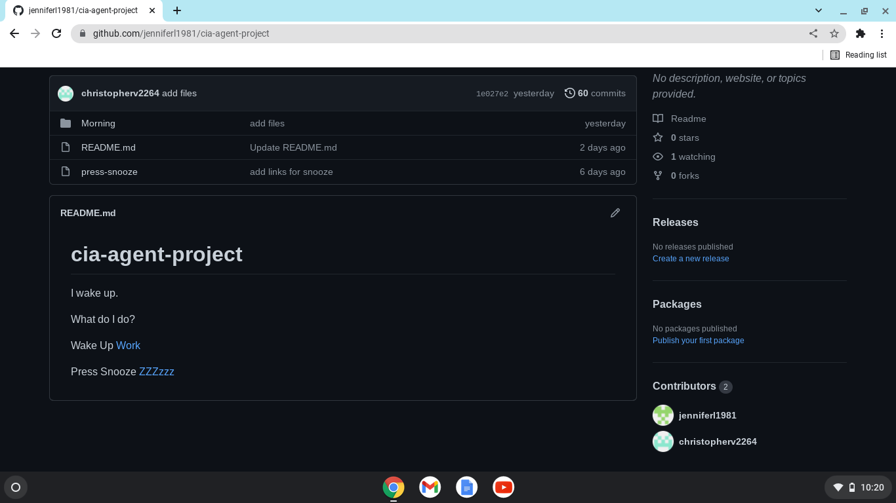

The Cia Agent Project is about choices you can make to either do your job or slack off
I partnerd with Christopher V. to get a glimpse of what a day as a cia agent is about. We were able to link files from one to another for the purposes
of making a story. We have continued to build up on our merging skill and my main takeaway is that teamwork is key since when one
of us did not communicate, it made the project a bit frustrating to do. Our main obstacle was linking sometimes since we would get confused about the process.
I felt that we went back on this topic a while ago, so it was a bit foggy in my head. Yet, by moving foward, our next goal is to talk more about our struggles
so we could support each other efficently.>
The Cia Agent Project
